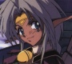
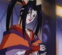
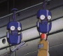

| Gene is pretty much "Outlaw Star's" main character. He likes shooting stuff and drinking, spends 'quality time' with women, and runs a small, semi-legitimate business which basically consists of bounty hunting and taking any kind of odd job for money. His house is a mess. He acts like your basic 20-year-old guy. ^_- He has a deeply rooted phobia of space travel. This makes things interesting when he winds up going into space. But he winds up the captain of the ship "Outlaw Star," which somehow keeps him from feeling confined and scared. |
| Despite his appearance, Jim is every bit as mature as Gene, maybe more so. He's Gene's partner, and always refers to Gene as 'aniki' (another word for friend or mentor). He's really an excellent mechanic. I'm pretty sure he thinks adults are nuts. ^_^ He has an unnatural attraction to his car, I'm afraid; he's named it Ehefrau, which is German for 'wife.' ^_^; Other than that, he's pretty normal. |
| I generally refer to Melfina as 'the naked chick in a box'--Hilda, Gene, and Jim opened a briefcase supposedly full of something valuable and it turned out to be HER inside, cryogenically frozen. She's an android, trying to figure out why she was made; nonetheless, she's a very *human* android, who can feel emotions, eat, etc. In the ship Outlaw Star, she takes off all her clothes and gets in a clear cylinder of gel to serve as navigator. Weird stuff. She's still trying to figure out *what* she is, exactly. |
|  | She used to be Ambassador Plenipotentiary of the Ctarl-Ctarl Empire, a very very powerful type of cat people. She is very strong, nearly able to beat Gene, Jim, and Melfina all put together, and can transform into a super-powerful beast. She holds a major grudge against Gene and company, and is broke, but still wants to track them down... |
|  | The resident cool assassin/mercenary of the series. Wears Japanese style clothing , and insists on keeping her word and killing her victims when she says she's going to kill them . Her weapon is a wooden sword , but she can cut through walls and stuff with it, and can just about beat Gene with it. Tries to maintain a very cold/stand-offish attitude. In other words, she's very cool. ^_- |
|  | Gilliam is the Outlaw Star's onboard computer. It is less than impressed with Gene's piloting skills , which sometimes annoys Gene. The ship has some weird things a little bigger than a can of soda that have faces and go around on tracks to 'talk' to crew members, give advice, etc. I get the feeling that Jim gets along with them rather well, what with his love of machines... ^_- Anyway, Gilliam's kind of the most cynical of the group, which is a little weird. |
| Fred is basically a gay merchant who's able to get all sorts of illegal weapons and the like. He's really got a crush on Gene and is excited to wait for Jim to grow up... ^^;;;;;; Of course, he doesn't feel much for women... He's kind of a coward, and is also a very shrewd businessman who doesn't let the fact that someone saved his life or that he's in love with someone cloud his judgment on a deal. |